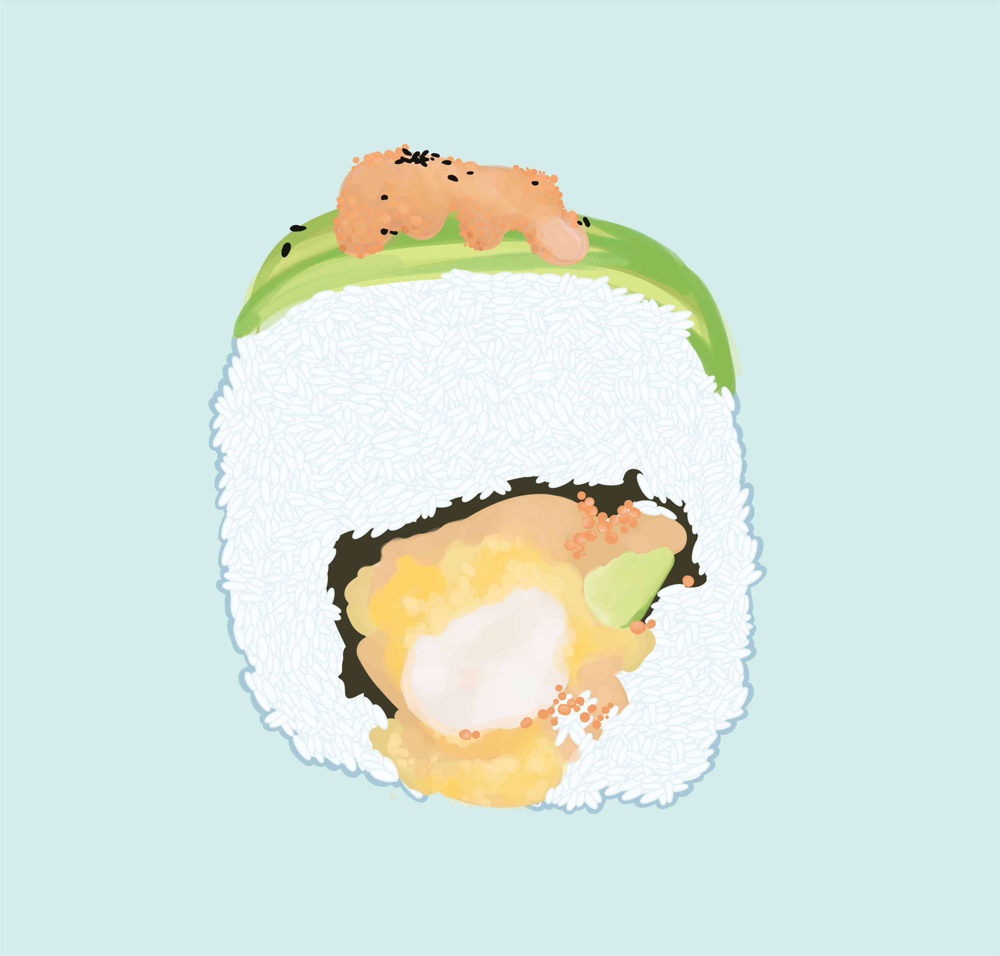

Sushi Series
I'd never say no to sushi, especially when it comes to tempura. I'm working on a series of sushi illustrations made exclusively with Illustrator's pen tool but inspired by a more painterly approach. This series started when I was playing around with layering opacities on my drawing tablet, and of course sushi ensued.

